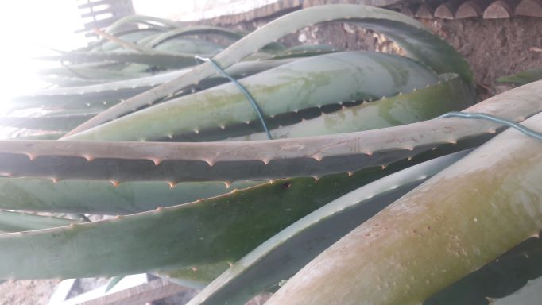
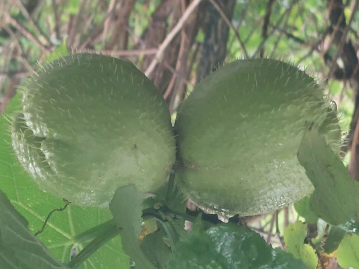

Hola, ¿qué hai trala cancela verde?
v26/12/2022
A Cancela Verde é unha explotación agraria familiar (no REAGA)
que está nun lugar onde sempre se traballou a terra mesmiño na Coruña (CTV).
Ímola ir abrindo xa...
...pronto a verás a toda cor ;-)
Namentres a continuación amosarémosvos algo do que xa hai tras dela :-)
Hai cero fitosanitarios, a de 2021 foi a primeira colleita que fixemos deste xeito e así seguimos no 2022...
Hai vontade de segui-los mellores criterios para unha producción integrada.
Hai dedicación e traballo, métodos tradicionáis, respecto ó medio
(mantemos o entorno limpo e bonito, prantamos alimento para os silvestres, hotéis de insectos, compostaxe, etc, etc...)
Hai selección das variedades máis resistentes e axeitadas ó entorno.
Hai excedentes do que nós mesmos consumimos, para poder, afortunadamente, compartir.
E hai un lote de cousas ás que lle facer fotos e que de seguido engadimos, ¡disfrutádeas!
...o outono virou fresco
- O kale, medrando...

volta ó Inicio - e berzas moi tenras

volta ó Inicio - aloe vera todo o ano

volta ó Inicio - e os limóns
volta ó Inicio - loureiro e romeu, recenden
volta ó Inicio - No inverno todo todo acouga...
volta ó Inicio
...a tempada de inverno/22 é tempo de lecer para a terra
- pero aínda é tempo de chaiotas

volta ó Inicio
Trala cancela verde aínda poderemos atopar moitas cousas bonitas....
- ¡ledicia de velas!
volta ó Inicio - ¡ledicia de velas!
volta ó Inicio - engaiolan
volta ó Inicio